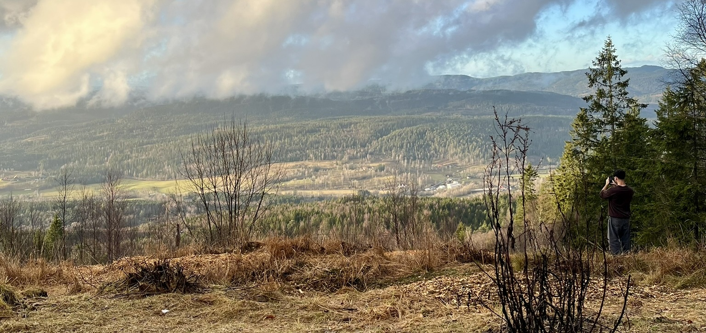
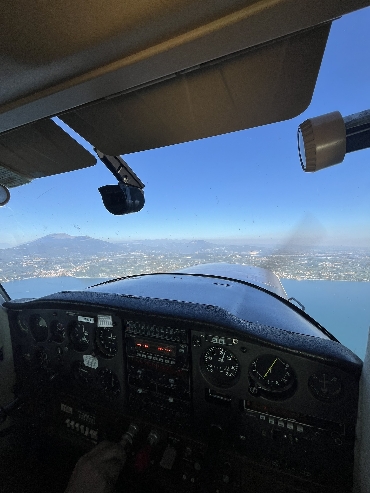
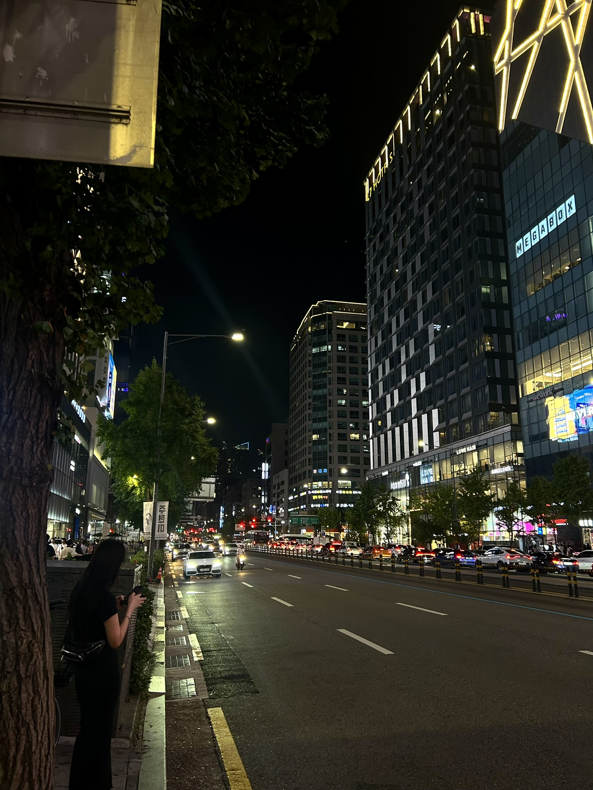

About Me
Warwick Mathematics & Statistics student with a passion for
data science and multivariate statistics.

I am a third-year Integrated Masters student at the University of Warwick. Born in Sheffield, I have spent most of my education diving into mathematical theory and statistical techniques that powers modern data science. I like to apply and understand the underlying statistical mechanics behind analysing data.
My intertest in data science ranges from biological and environmental modelling to sports analytics. I am curious in using statistics and data to make a change in the world as well as being motivated by optimising sporting scenarios. I like to use data and machine learning strategies, like principal component analysis (PCA) or generalised linear models (GLMs), to uncover new things that might be hidden by the league table (like in my Premier League Audit).
Technical Toolkit & Interests
- Advanced Statistics: GLMs, Multivariate Analysis, Hypothesis Testing, and Machine Learning.
- Programming: R, Python (Pandas/Numpy), and SQL.
- Strategic Interests: I am interested in how statistical modeling can improve sustainability in agriculture and efficiency in sports.
Beyond the Numbers
When I’m not analysing datasets, I’m likely involved in football in a more literal sense. I run the Stats Society Fantasy Football at Warwick as well as being a part of the team.
My loyalties lie with Forest Green Rovers—a choice me and my mate made back in Year 8 when we decided to support a rising League two underdog (currently stuck in the National League).
Outside of football, I like to try play other sports, such as squash (which I used to play) and golf. I am an avid cook and I (try to) enjoy going to the gym. I also love exploring the world – getting to see new sights and try new food!

